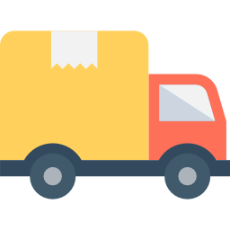
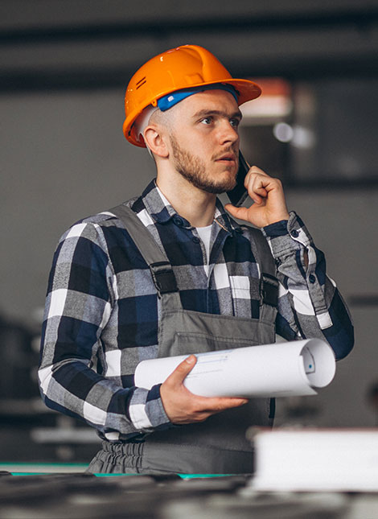
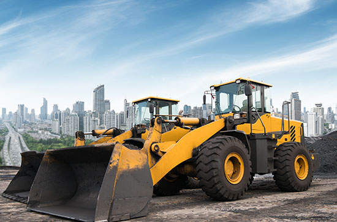
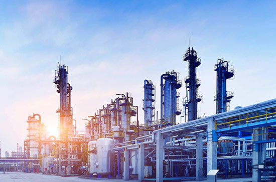
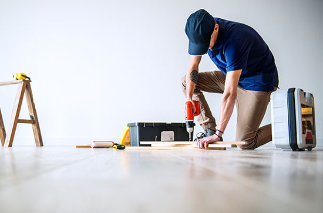

01. Projetos sob medida
Soluções desenvolvidas a partir da máquina, do processo e das necessidades reais da operação.
02. Especialistas em PLC / CLP
Programação, ajustes de lógica, intertravamentos e validações para sistemas de controle.

03. Modernização de máquinas
Retrofit para ampliar vida útil, reduzir falhas e facilitar manutenção de equipamentos existentes.
04. Suporte técnico
Apoio para diagnóstico, ajustes e retomada de sistemas automatizados em ambiente industrial.

Conhecimento técnico aplicado à automação industrial
A LF PAK Equipamentos Industriais atua no desenvolvimento de soluções para automação industrial, combinando conhecimento técnico, precisão na execução e foco nas necessidades reais da operação. Nosso objetivo é entregar sistemas confiáveis, seguros e preparados para aumentar a eficiência da produção.
- Projetos voltados a controle, produtividade e manutenção eficiente.
- Atuação em PLC, painéis elétricos, sensores, inversores e IHMs.
- Integração de máquinas, comandos elétricos e processos industriais.
- Comunicação objetiva com equipes técnicas e gestores industriais.
Automação aplicada a máquinas, painéis e processos industriais

Programação de PLC / CLP
Lógicas de controle, sequências, intertravamentos e ajustes para operação previsível.
Painéis elétricos
Desenvolvimento e adequação de painéis para comando, proteção e automação.
Automação de máquinas
Automatização de ciclos, comandos repetitivos e etapas manuais do processo.
Retrofit industrial
Atualização de comandos e componentes para recuperar confiabilidade operacional.

Sensores, inversores e IHMs
Integração de dispositivos para leitura, acionamento e visualização do processo.

Diagnóstico e manutenção
Análise de falhas, correções e suporte técnico para sistemas automatizados.
Onde a automação pode apoiar sua operação
Linhas de produção
Controle de etapas sequenciais e repetibilidade operacional.
Máquinas de embalagem
Sincronismo de ciclos, sensores e comandos de acionamento.
Esteiras transportadoras
Movimentação, segurança e fluxo de materiais automatizados.
Sistemas de envase
Controle de dosagem, sequência e monitoramento do processo.
Controle de motores
Integração com inversores, partidas e comandos elétricos.
Processos repetitivos
Redução de intervenção manual e padronização de ciclos.
Células industriais
Integração entre equipamentos, sensores e dispositivos de comando.
Monitoramento
Visualização de estados, alarmes e dados de equipamentos.
Processo técnico para reduzir risco antes da implantação
Diagnóstico técnico
Análise da máquina, painel, sinais, lógica atual e pontos críticos da operação.
Planejamento da solução
Definição da arquitetura, componentes, interligações e estratégia de controle.
Implementação e testes
Execução técnica, parametrização, validação funcional e ajustes em campo.
Entrega e suporte
Orientação de uso, treinamento operacional e apoio técnico após a entrega.
Pronto para modernizar sua operação industrial?